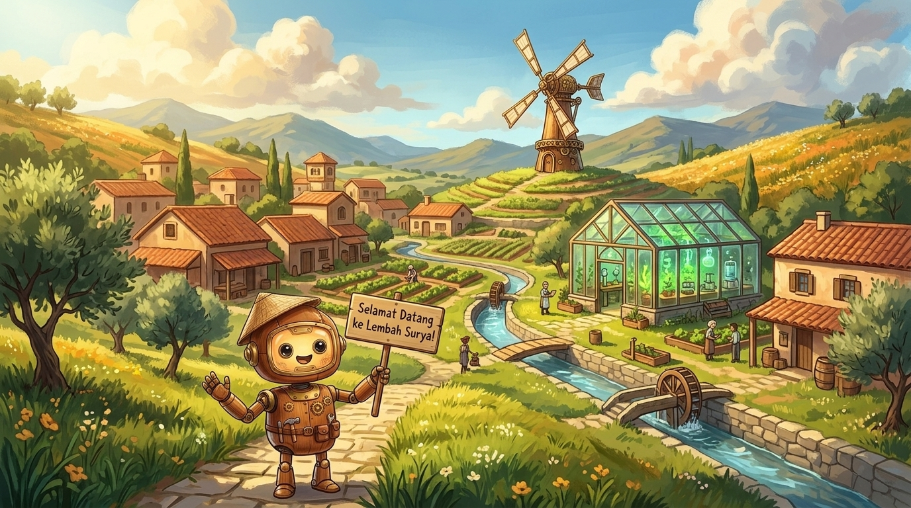

Pulihkan pompa air surya, rumah kaca botanika, dan kincir angin bersama Bobi. Seluruh alat ukur, tombol eksperimen, dan popup panduan tampil langsung di dalam dunia 3D VR!
💡 Cara Bermain di VR / HP: Cukup arahkan titik pandang tengah (Gaze) selama 1.2 detik atau sentuh langsung tombol 3D di meja eksperimen. Progres tersimpan lokal di perangkat.